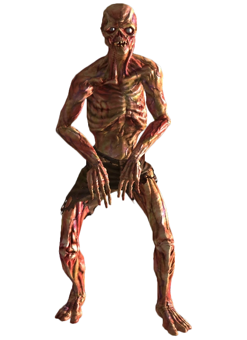
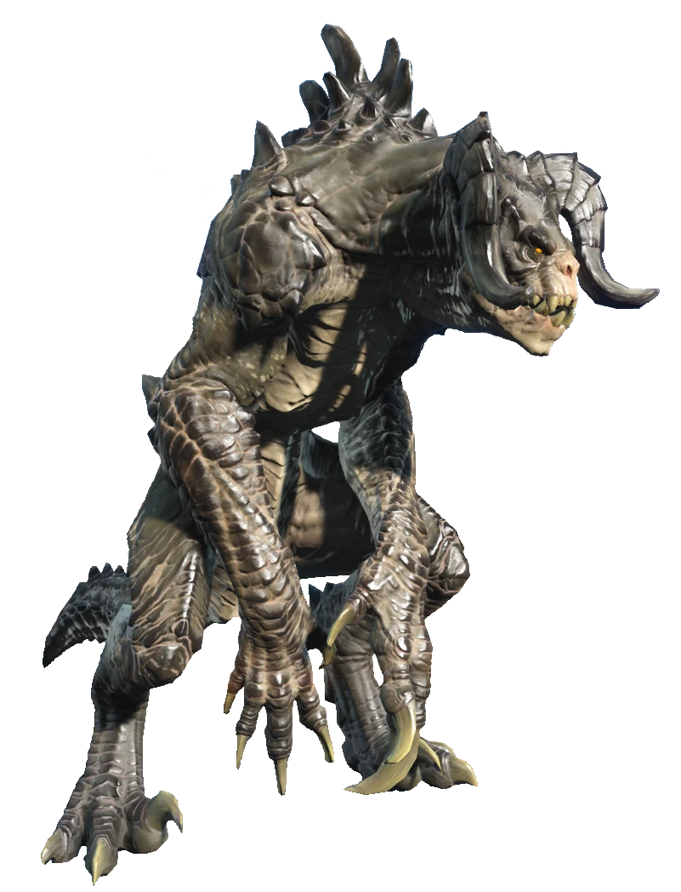
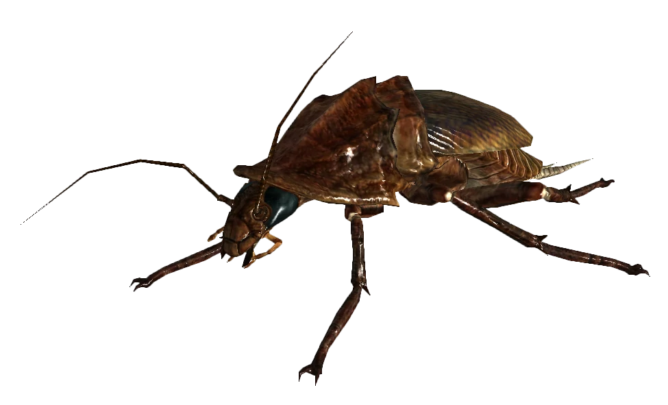
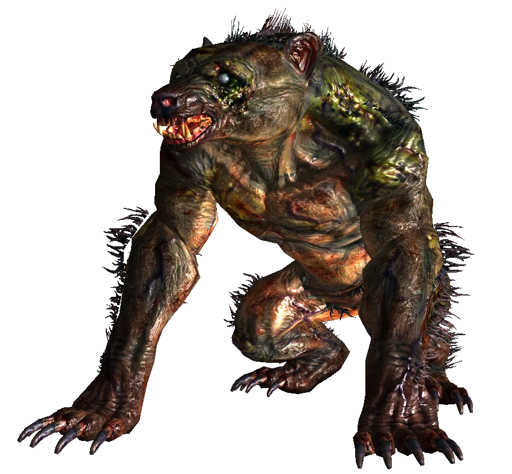

A Super Mutant is a previously human organism that has been transformed by the Forced Evolutionary Virus, or one of its variants, depending on location.
A Super Mutant is a previously human organism that has been transformed by the Forced Evolutionary Virus, or one of its variants, depending on location.
 One of the creatures seen most frequently is the feral ghoul. A ghoul, necrotic post-human, is someone that has been mutated at the cellular level by an intense dose of radiation, such as that created by an atomic blast. These ghouls are sentient, and although face extreme prejudce at the hands of humans, are generally no more of a threat then the average human is in the post-apoclyptic wasteland. There is much debate over weather a normal ghoul will eventually devolve into a feral ghoul (a process known as ferocious post-necrotic dystrophy), given enough time or radiation. It leads people to feeling a level of distrust towards ghouls because they feel that they are days away from going feral, while they just want to be accepted by society.
Feral ghouls, or ferocious necrotic post-humans, are hostile creatures that live off radiation and attack any living organism on sight. Further exposure to radiation makes them more feral and more dangerous until they become a walking conduit of radiation, a luminous necrotic post-human, acting as a healing source for other ferals.
There are also several examples of ghoulified animals, such as gorillas, dogs, radstags (a mutated type of deer), brown and black bears (yao guais), and rats.
A Super Mutant is a previously human organism that has been transformed by the Forced Evolutionary Virus, or one of its variants, depending on location.
The original Super Mutants were created by the Forced Evolutionary Virus at the Mariposa Military Base, a goverment-controlled base pre-war. There, under the direction of Captain Maxson, expirmentation began on military prisoners using the FEV. The site was soon abandoned after the dropping of the bombs and Doctor Richard Grey, along with an expidition team in the year 2102, ventured into the base. While the others perished, he fell into a vat of FEV and became the creature known as The Master. Every Super Mutant created afterwards on the West Coast would answer to The Master and be a member of his Army.
The second variety of Super Mutant was created in Vault 87 in Washington DC using the Evolutionary Experimentation Program, a derivative of the FEV. Because it is an even more expermiental version, the Mutants created have no reasoning abilities and are always hostile. Created from the human Vault Dwellers, when they ran out of test subjects, the Mutants felt compelled to leave the vault and kidnap human settlers to use instead. They have been seen kidnapping human settlers, travelling merchants and anyone else unlucky enough to be caught alone.
In the Commonwealth, they have their own variety of Super Mutant that is created by the shadowy Insitute. These are created using a sample of the West Coast's FEV and kidnapped humans. The Insitute eventually discountinued their research into the FEV, but not before releasing their version of the Super Mutant onto the surface. These particular Mutants are unusual in that they retain their ability to communicate and create tribal settlements, much like those from the West Coast, but prefer to speak with violence like those from the DC area. This strain can also be cured and is currently the only known one that can do so.
 A mirelurk is a group of mutated crustaceans and turtles, most common on the East Coast. A similar creature, known as a Lakelurk, exists on the West Coast, and is a type of mutated turtle.
A mirelurk is a group of mutated crustaceans and turtles, most common on the East Coast. A similar creature, known as a Lakelurk, exists on the West Coast, and is a type of mutated turtle.
Originating from water supplies like lakes, rivers and coastal waters that were contanimated prior to the bombs dropping by megacorporations dumping radioactive waste and other pollutants, Mirelurks began mutating the earliest and became as they are with the added help of nuclear radiation from the bombs.
The crab Mirelurk, Scylla Serrata Horrendus, shares an ancestory with the horeshoe crab and the blue crab, two completely unrelated species of crab. Wasteland scholars are unsure how the two species could combine to create one species, but they classify it as belonging to both the Crustacea (Crustacean) and the Chelicerate phylums (anthropod).
The two less common form of Mirelurk, the lobster Mirelurk and turtle Mirelurk, are unique to the Massachusetts and West Virginia areas. Turtle Mirelurks are mutated snapping turtles and are extremely agile and fast, while lobster Mirelurks can pummel prey with vicious claw strikes.
Mirelurks, given the massive size of both their bodies and clutches of eggs, give a large bounty of meat. Weather hunted wild or herded, they offer a steady flow for meat sellers and buyers.
 The Deathclaw is perhaps the most terrifying and deadly predator in the Wasteland. Towering over even Super Mutants, with razor sharp fangs and claws, they are an apex predator that is not easily dealt with and often best left alone.
The Deathclaw was created in labs by the United States government prior to the Great War as shock troopers meant to replace human infantrymen. Their main biological component is the Jackson's Chameleon (hence their horns), as well as a mixture of other animals. Classified as a reptile, they were custom designed to be bipedal with freely rotating arms that have five clawed fingers on each hand. Their thick, leathery hides protect them from melee weapons and even a large variety of firearms and energy weapons. Large caliber weapons like a .50 cal rifle or modded laser rifle are generally needed to penetrate it's natural defenses.
Living in packs, Deathclaws have an alpha female and male that leads the rest of the pack. Deathclaws are also extremely territorial and will fight fiercly to protect their chosen area of land. Only killing both alphas, or the entire pack, will be enough to remove them entirely.
With their already lab-given intelligence, a pack of Deathclaws were made hyper intelligent by the Enclave and in the year 2241, were snuck into Vault 13 as a cover for Vault Dweller abductions. The Deathclaws proved too intelligent, however, and broke their conditioning and ignored their orders, choosing instead to live peacefully with the Vault Dwellers, viewing them as part of their "pack."
 Also known as the Great American Cockroach, the Radroach is a mutated cockroach approximatly the size of a house cat. Found in sewers and underground areas like subway tunnels, they typically feed on the dead unless desperate.
The Radroach, much like cockroaches themselves, are found in every corner of the former United States, occupying trash heaps, piles of bodies and nuclear waste dumps.
Although not particularly deadly in singular numbers, a sizeable swarm can take down even a prepared foe.
 Yao Guai, a Mandarin term meaning "Monster," was coined by the descendants of those held in Chinese internment camps prior to the Great War. A Yao Guai is a heavily mutated American black bear and sits under the Deathclaw in terms of deadliness and ferocity.
Highly aggressive, a Yao Guai will attack any human or animal on sight (aside from those with the Animal Friends perk), up to and including Deathclaws, sometimes even winning such a battle. On the opposite spectrum, they care greatly for their cubs and those they have bonded with. Some have even been shown to be able to be domesticated.
The Yao Guai is rarely found in urban settings, preferring to stay in forested areas such as former National Parks, and as such is prized by Tribals that live in remote areas for their meat and hide. Some even make their paws into exotic weapons that they believe embody the warrior spirit of the creatures themselves.